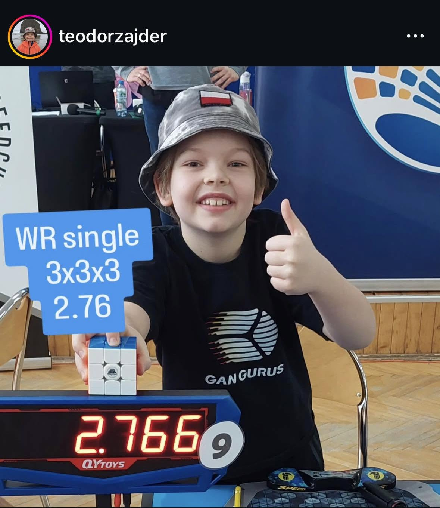
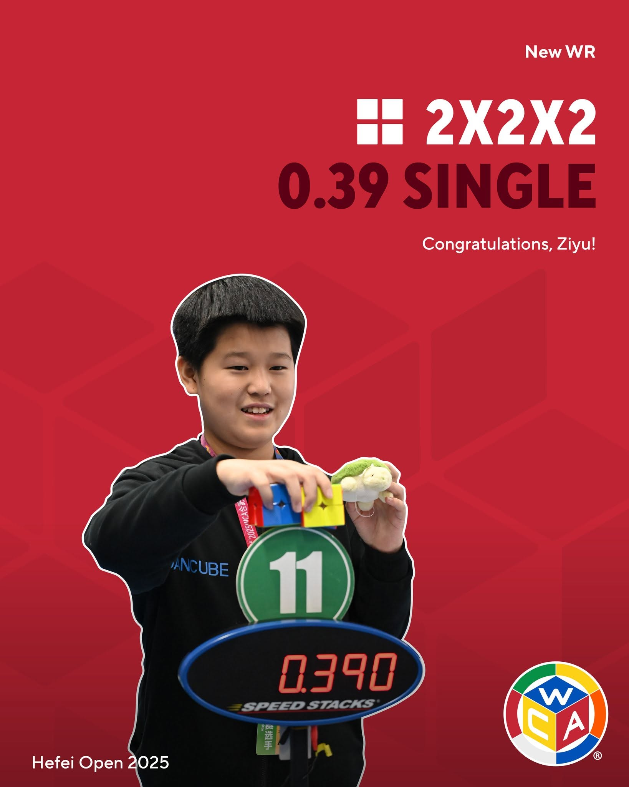
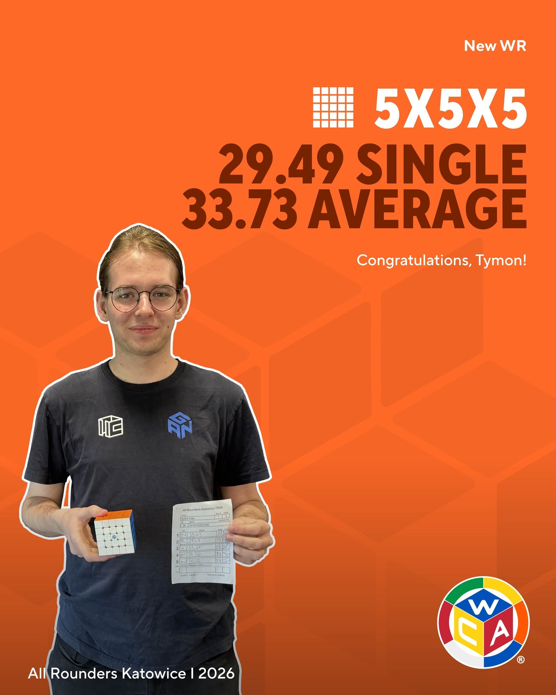
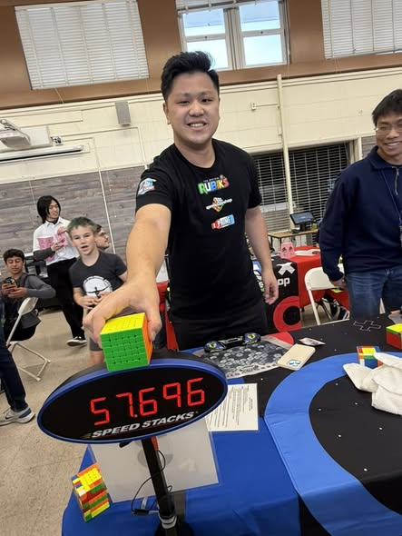

Teodor Zajder  Single: 2.76 seconds Cube: Gan 12 Maglev UV Date: Sunday, February 8, 2026 WCA profile of Teodor Zajder 3x3x3 World Record of Teodor Zajder
Ziyu Ye  Single: 0.39 seconds Cube: Gan 251M Leap Date: Saturday, October 25, 2025 WCA profile of Ziyu Ye 2x2x2 World Record of Ziyu Ye
Tymon Kolasinski Single: 15.18 seconds Cube: Moyu Aosu V7 Date: Sunday, December 7, 2025 WCA profile of Tymon Kolasinski 4x4x4 World Record of Tymon Kolasinski
Tymon Kolasinski  Single: 29.49 seconds Cube: Gan 562M UV Date: Friday, May 1, 2026 WCA profile of Tymon Kolasinski 5x5x5 World Record of Tymon Kolasinski
Max Park  Single: 57.69 seconds Cube: Moyu Aoshi WRM Date: Saturday, April 26, 2025 WCA profile of Max Park 6x6x6 World Record of Max Park
Max Park Single: 1:30.59 Cube: Moyu Aofu V5 Date: Sunday, July 5, 2026 WCA profile of Max Park 7x7x7 World Record of Max Park
Patrick Ponce Single: 5.62 seconds Cube: Moyu RS3V5 ballcore UV Date: Friday, August 14, 2026 WCA profile of Patrick Ponce 3x3x3 One-Handed World Record of Patrick Ponce